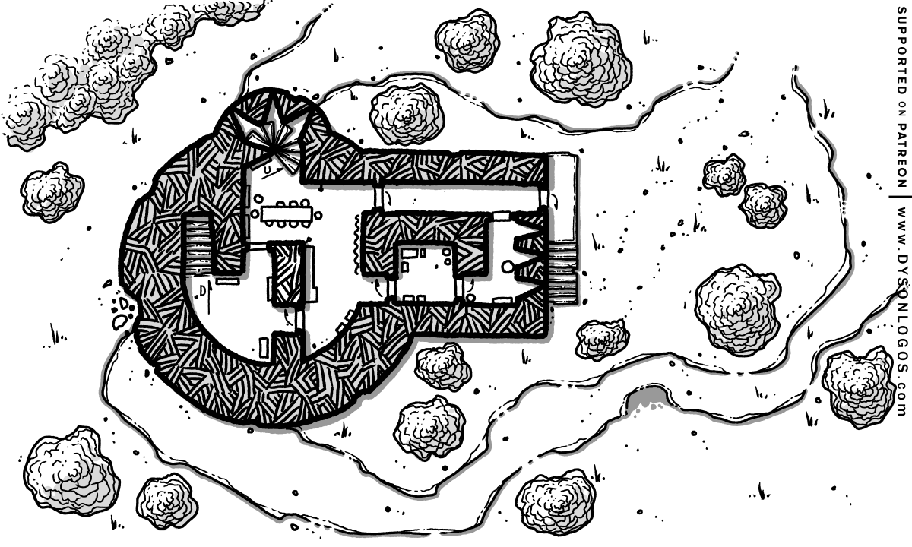

Welcome to Old-School Adventures
New to classic tabletop RPGs or coming back after a few years? This guide will help you understand how old-school play works, choose a game, and get ready for your first session.

Explore the guide
What Is Old-School Roleplaying?
Explore the world, ask questions, and try solutions your character could attempt. If a door is locked, you might check for another entrance or look for a key.
Choose Your First Game
Compare Basic Fantasy RPG, Swords & Wizardry, and OSRIC to help you pick a starting point.
Your First Adventure
Start with a few players, a set of rules, and a short adventure. This section will grow into a preparation checklist.
Glossary and Resources
Read Principia Apocrypha for more about old-school play.